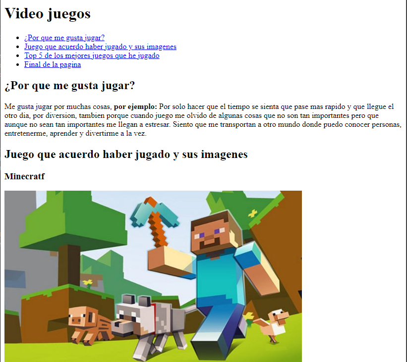
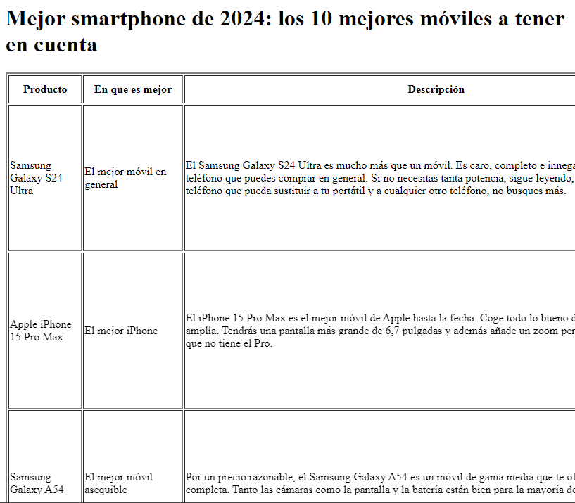

Sobre mi
Me llamo yorman y tengo 18 años, soy una persona a la que le gusta hacer muchas cosas, por ejemplo cuando era pequeño mantenia haciendo invetos caseros y me divertia con eso, una vez conoci a un amigo que se llama jose luis y resulta que a el tambien le gustaba hacer cosas igual que a mi asi que el y yo manteniamos de arriba para abajo haciendo inventos que veiamos, una de las mejores cosas que hicimos fue una maquina de tatuar.
Mientras fui creciendo tuve nuevos gustos y uno de ellos fue los instrumentos musicales, ese gusto empezo porque mi hermano mayor estaba en una banda y cada que el iba yo lo acompañaba, esa banda tocaba re bien y me quedo gustando todo lo que tuviera que ver con instrumentos y le conte a mi hermano, el hablo con el profesor y me uni a la banda, empece por la percusion y me quedo gustando asi que ahi me y quede, llegue a viajar a otras ciudades a tocar y despues me tocor salirme, aparte de eso tambien aprendi a tocar otro instrumento que fue la trompeta pero solo fue un rato.
Cosas que se hacer
- Se tocar una trompeta pero no a nivel experto
- Se leer una partitura
- Se tocar algunos instrumentos de percusion
- Se hacer una maquina de tatuar
Proyectos de la clases Introduccion a la Programacion
- hobby

enlace al repositorio enlace a la pagina - Pagina de tabla

enlace al repositorio enlace a la pagina
proyectos de la clase Logica de Programacion
- calcular puntos y nivel de fidelizacion enlace al repositorio
- 3 actividades en 1 enlace a la pagina
Formulario
llena el formulario para saber quien vio la pagina